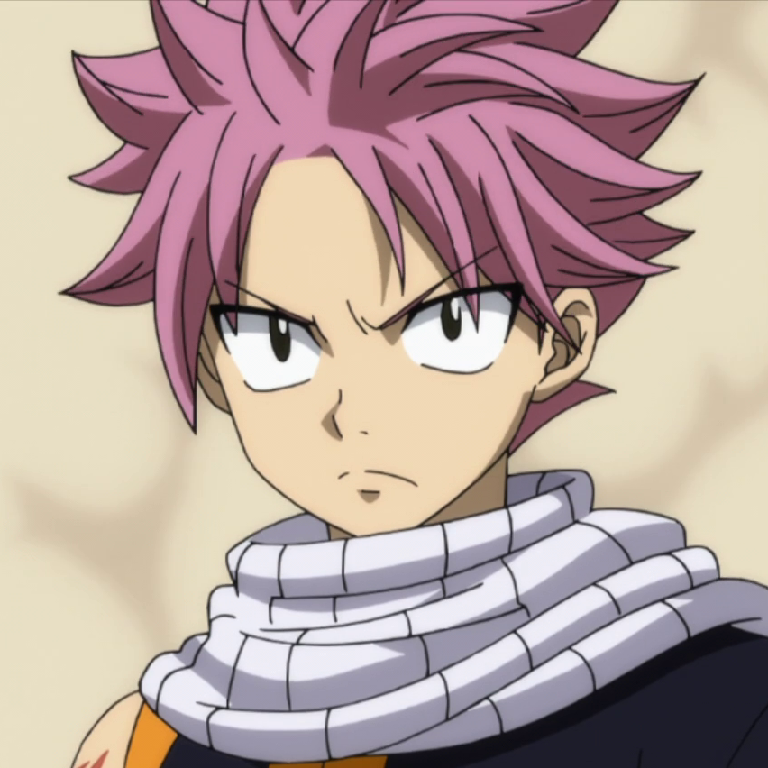
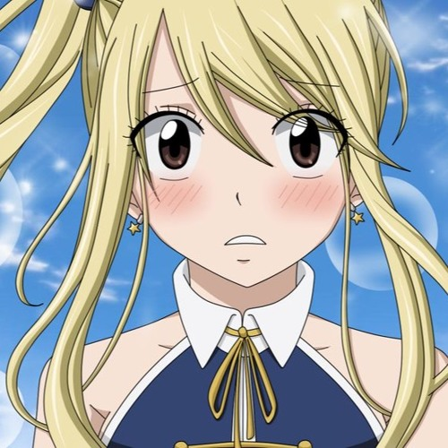
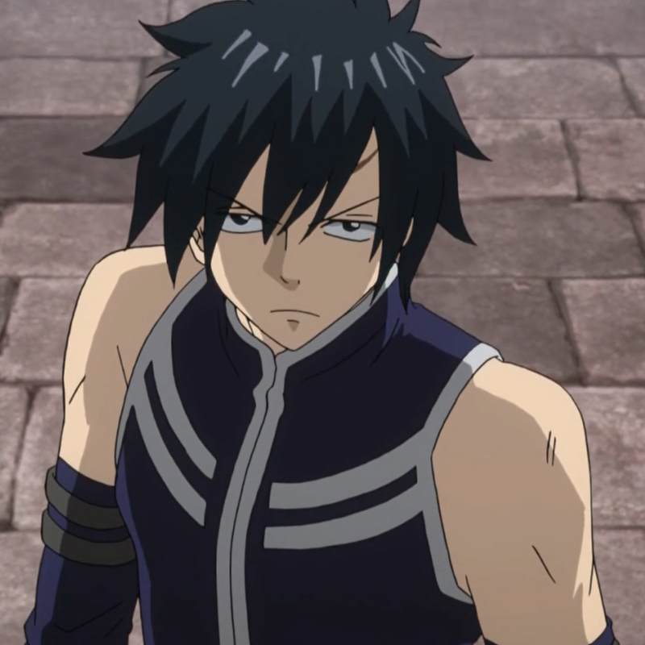
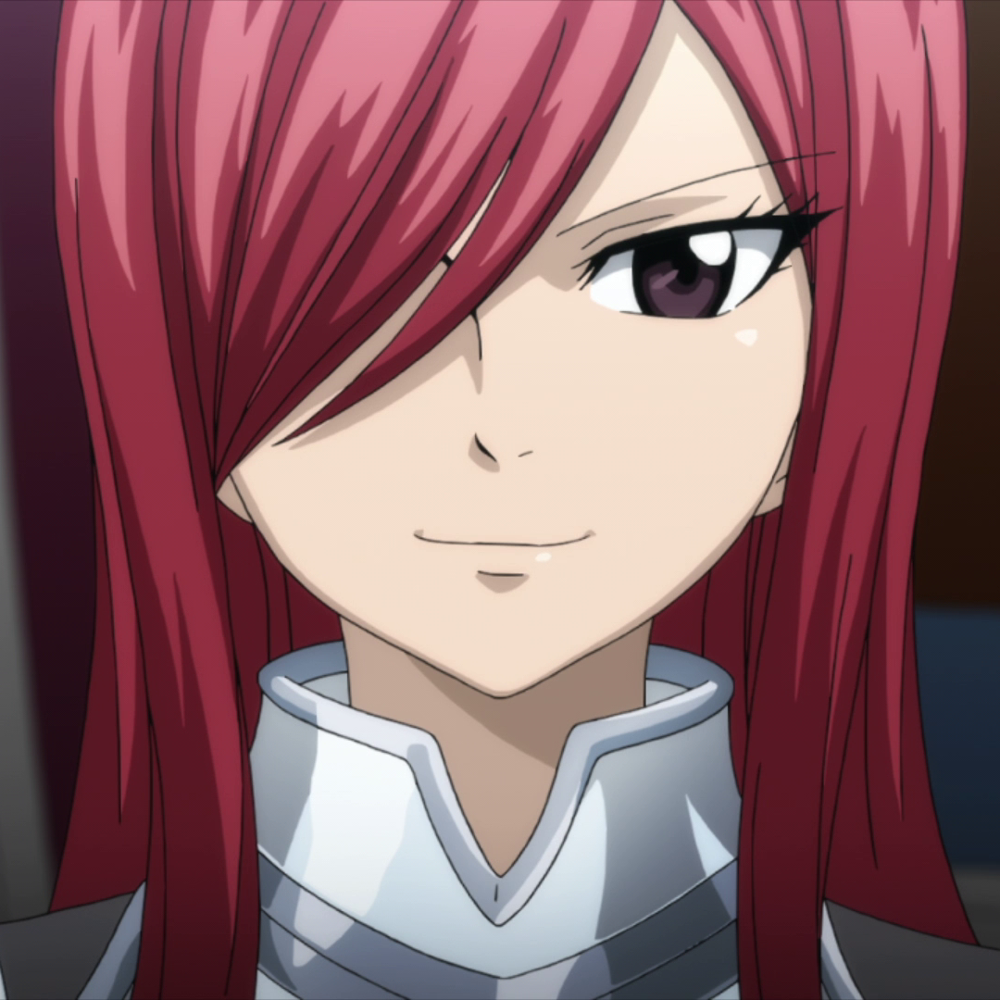
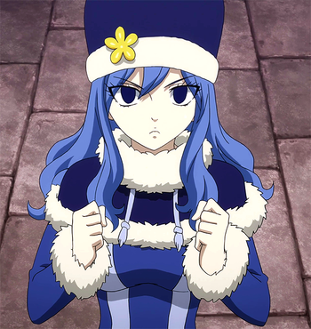

Natsu Dragneel. It was serialized in Kodansha's Weekly Shonen Magazine from August 2006 to July 2017.The manga has been adapted into an anime series produced by A-1 Pictures, Dentsu Inc., Satelight, Bridge, and CloverWorks which was broadcast in Japan on TV Tokyo from October 2009 to March 2013. A second series was broadcast from April 2014 to March 2016. A third and final series aired from October 2018 to September 2019. The series has also inspired numerous spin-off manga, including a prequel by Mashima, Fairy Tail Zero, and a sequel storyboarded by him, titled Fairy Tail: 100 Years Quest. Additionally, A-1 Pictures has developed nine original video animations and two animated feature films.

Lucy Heartfilia
Lucy Heartfilia has brown eyes blonde hair that is usually tied by ribbons in a variety of colors in a small ponytail to the right side of her head with the rest of the hair loose.Lucy takes exceptional pride in her appearance and is very confident in her sex appeal, often exuding a certain amount of vanity. Despite this superficial attitude, she is a clever, kind, and genuinely caring person. Lucy is passionate for literature and is in the process of writing her own novel about her adventures with Fairy Tail

Gray Fullbuster
Gray Fullbuster's most prominent feature is his spiky black-colored hair. He has dark blue eyes, and his body is toned and muscular.Gray has a laid-back personality, but will get serious when the time calls for it. He and Natsu have a friendly rivalry, and while they can often be seen fighting one another verbally or physically, the two are actually quite concerned about each other. Gray was quite obstinate and reckless when he was younger, but over time, he has attained a more cautious attitude towards life.

Erza Scarlets
Erza Scarlets is a young woman with long, scarlet hair and brown eyes. Erza is a very strict person, often criticizing the bad behavior and habits of the other guild members, causing most of them to apologize, fearing that they might invoke her wrath.

Juvia Lockser
Juvia Lockser is a slender, teenage girl with azure blue hair, midnight blue eyes, snow skin complexion and a curvaceous figure. Juvia is first introduced with long hair, tightly curled at the base, wearing a sapphire blue coat, a cream colored furry trimmed navy blue shawl with a pure white teru teru bozu attached to it, as well as a matching Russian Cossack hat.
